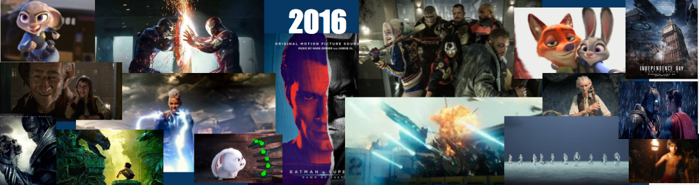

Movie Summary
"Finding Dory" is about a friendly-but-forgetful blue tang fish called, Dory, had been speraporate with her parents for a long time, so she decided to find her parent.
Box Office: 961.7 million USD
Cast: Ellen Degeneres
Rating:7.95/10